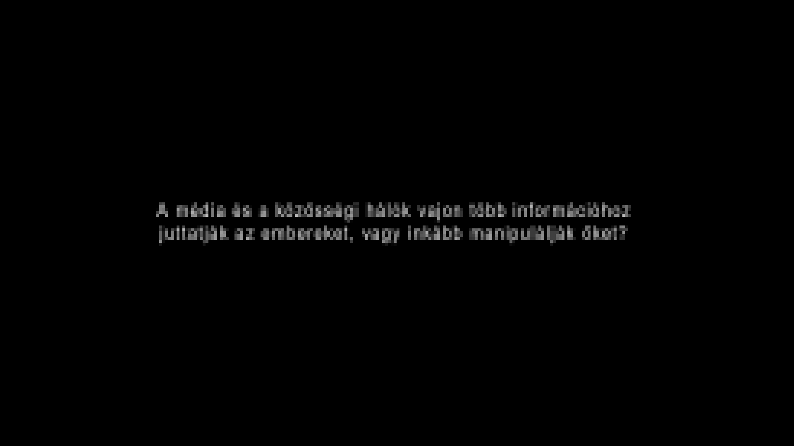
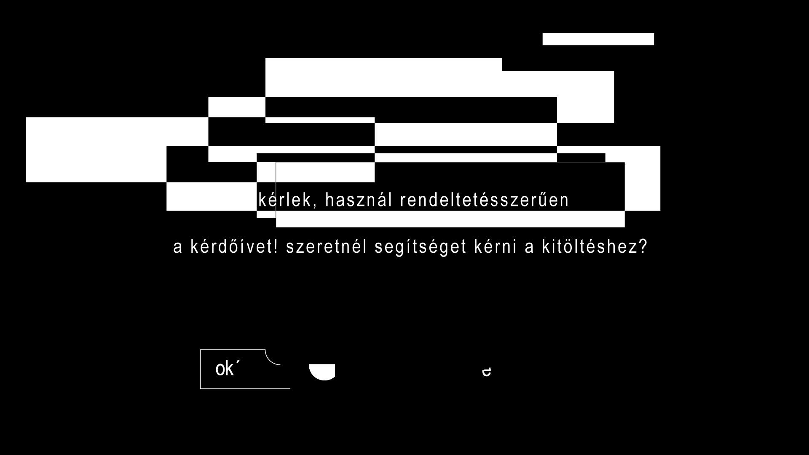
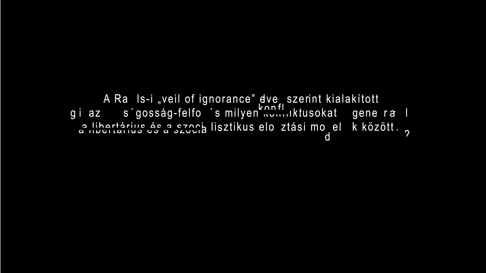
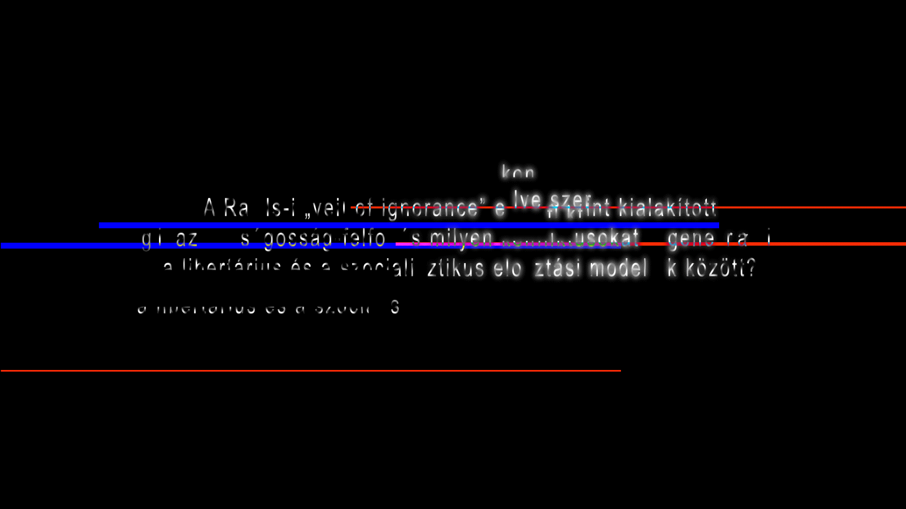
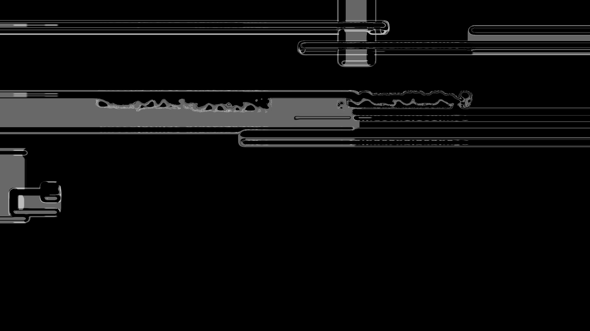

Kérdőív kitöltése
neved?
tovább
ENTER
Kérlek használd rendeltetésszerűen a kérdőívet!
OK
a következő kérdések társadalmi felelősségvállalásról szólnak.
kattints a tovább gombra, ha szeretnéd folytatni a kérdőívet!
kilépés
tovább
mit gondolsz a Mome autonómiájának ügyében történő szenátusi döntésekről?
tovább

tovább

tovább




vissza a kezdőoldalra